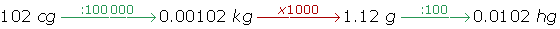
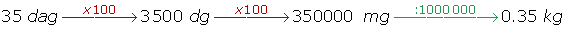

Medidas de masa
Medidas de masa
La unidad principal para medir masas es el gramo.
Existen otras unidades para medir cantidades mayores y menores, las más usuales son:
| Medida | Símbolo | Equivalencia |
|---|---|---|
| Kilogramo | Kg | 1000 g |
| Hectogramo | hg | 100 g |
| Decagramo | dag | 10 g |
| Gramo | g | 1 g |
| Decigramo | dg | 0.1 g |
| Centigramo | cg | 0.01 g |
| Miligramo | mg | 0.001 g |
Si queremos pasar de una unidad a otra tenemos que multiplicar (si es de una unidad mayor a otra menor) o dividir (si es de una unidad menor a otra mayor) por la unidad seguida de tantos ceros como lugares haya entre ellas.


Ejemplos de conversión de medidas
1 Pasar 50 kilogramos a decigramos:
Tenemos que multiplicar (porque el kilogramo es mayor que el decigramo) por la unidad seguida de cuatro ceros, ya que hay cuatro lugares entre ambos.
50 kg · 10 000 = 500 000 dg
2 Pasar 408 miligramos a decigramos:
Tenemos que dividir (porque el miligramo es menor que el decigramo) por la unidad seguida de dos ceros, ya que hay dos lugares entre ambos.
50 kg : 100 = 500 000 dg
3 Expresar en gramos:
5 kg 5 hm 7 dag 5 000 g + 500 g + 70 g = 5 570 g
5 000 g + 500 g + 70 g = 5 570 g
3 g 2 cg 3 mg 3 g + 0.02 g + 0.003 g = 3.023 g
3 g + 0.02 g + 0.003 g = 3.023 g
25.56 dag + 526.9 dg 255.6 g + 52.69 g = 308.29 g
255.6 g + 52.69 g = 308.29 g
53 600 mg + 9 830 cg 53.6 g + 98.3 g = 151.9 g
53.6 g + 98.3 g = 151.9 g
1.83 hg + 9.7 dag + 3 700 cg 183 g + 97 g + 37 g = 317 g
183 g + 97 g + 37 g = 317 g
Otras medidas de masa
1 Tonelada métrica
La tonelada métrica se utiliza para medir masas muy grandes.
2 Quintal métrico
El quintal métrico es utilizado principalmente en la agricultura.
Observemos que
1 t = 1 000 Kg = 10 · 100 Kg = 10 q